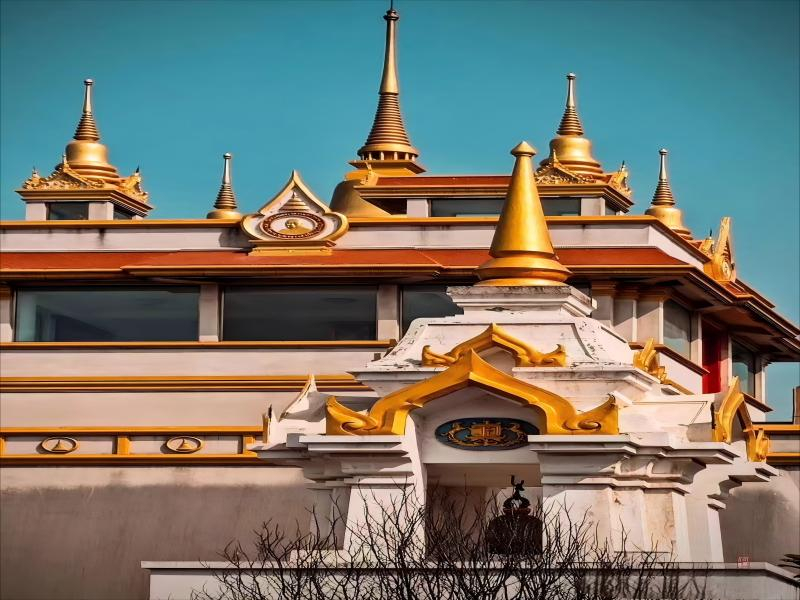
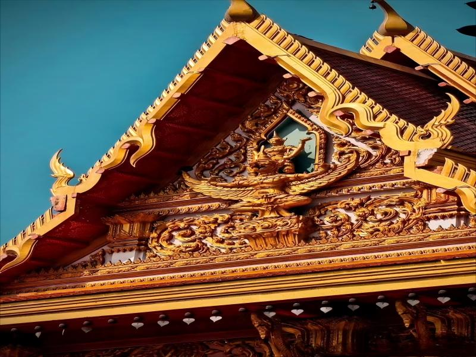
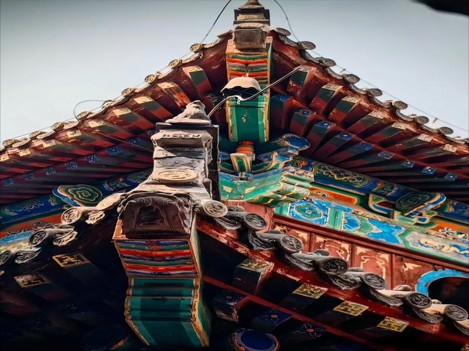
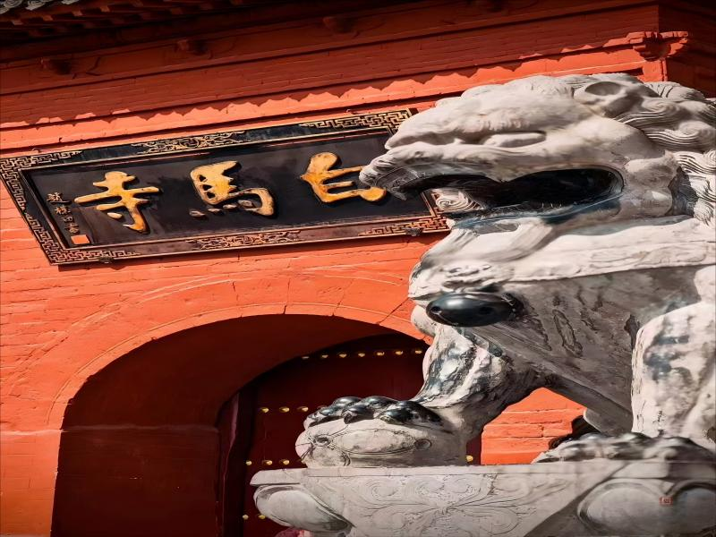

简介

位于河南省洛阳市，始建于东汉永平十一年（公元 68 年），是佛教传入中国后兴建的第一座寺院，被誉为中国佛教的 “祖庭” 和 “释源”。
白马寺的建立与汉明帝刘庄的一个梦有关。据传，汉明帝梦见一个高大的金人，形如佛像，于是派遣使者前往西域求取佛经和佛法。使者在大月氏国遇到印度高僧摄摩腾和竺法兰，并邀请他们到中国弘法。两位高僧以白马驮载佛经和佛像来到洛阳，汉明帝为纪念白马驮经之功，敕令建造了白马寺。
白马寺的建筑布局为中轴对称格局，主要建筑分布在中轴线上，包括山门、天王殿、大佛殿、大雄殿、接引殿和清凉台等。寺内还保存了大量元代夹纻干漆造像，如三世佛、二天将、十八罗汉等。
白马寺不仅是中国佛教的发源地，还在佛教传播中发挥了重要作用。它将佛教传到了朝鲜、日本和东南亚，使佛教在亚洲得到普及，后来又进入欧美，成为世界各地佛教信徒参拜的圣地。
此外，白马寺还拥有国际化的佛殿苑，包括印度佛殿苑、泰国佛殿苑和缅甸佛塔苑。这些佛殿苑分别由印度、泰国和缅甸政府出资建造，使白马寺成为全世界唯一拥有中、印、缅、泰四国风格佛殿的国际化寺院



